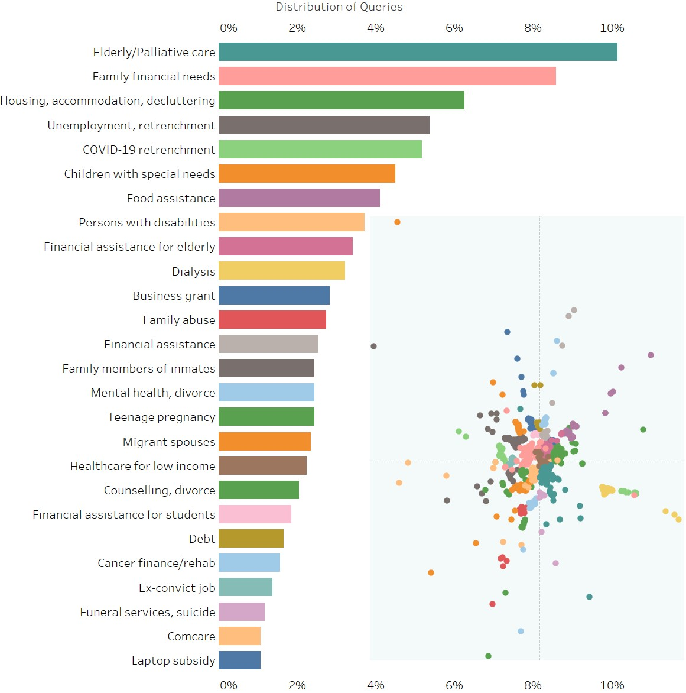
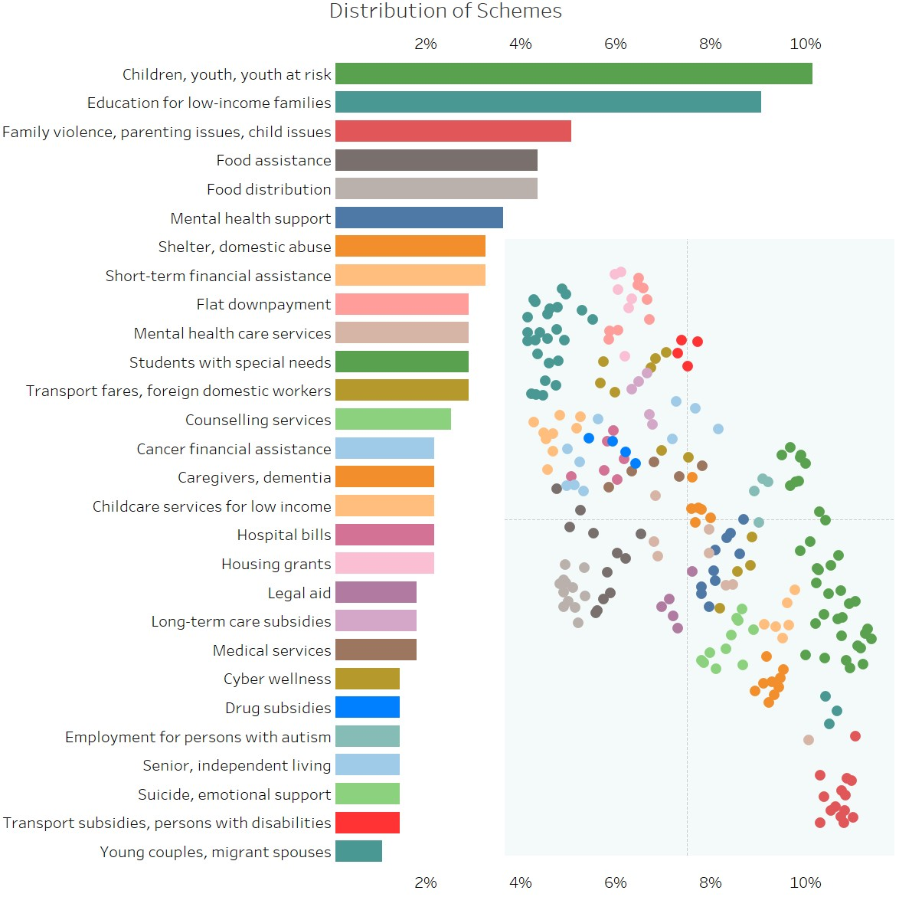
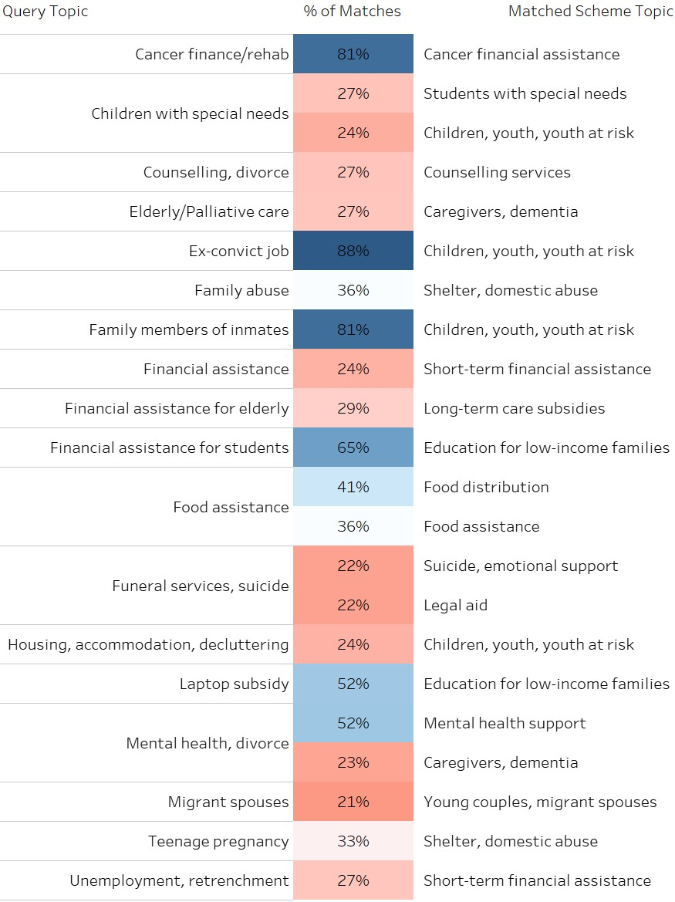

The SchemesSG database has recently grown to 300 schemes and >1,500 user queries. It’s not quite a data lake yet, but perhaps a wading pool from which we can uncover insights on the top social needs in Singapore. We share some of these insights.
In this article, our very own ML engineer Quintus Lim performs a data driven study to analyse the
topology of the >300 schemes in our Bank and >1,500 user queries we have
received and served so far. Quintus then analyses the fit
between the listings and the queries, and explains how our team leverages such insights to
improve
Schemes Pal's search model.
Quintus's work underscores how the data collated by Schemes SG can serve to provide a critical
sensing of
social needs on the ground.
--------
My blog post today first briefly explains the analytical techniques used to profile the schemes
and user queries we've collected, then analyses the results to identify which social areas
frequently see unmet needs, and how schemes may be addressing them. This is still preliminary
work, and we hope that as our user base grows and the Schemes Bank becomes a more comprehensive snapshot of the entire social service, it can help serve as a “gapfinder”
for unmet social needs in Singapore.
Profiling user queries
I start by teasing out the main topics that user queries tend to fall
under. With >1,500 queries to date collected via Schemes Pal, it’s inconvenient to read them
manually and we need data science techniques. There are at least 3 ways to approach this:
• Classification/supervised learning (e.g. k-Nearest Neighbours) which requires humans to define
all
relevant topics beforehand;
• Self-supervised learning (e.g. Doc2Vec) which picks labels from within the training
data itself;
• Clustering/unsupervised learning (e.g. k-Means) which solely analyses the features intrinsic
to
unlabelled data.
Sometimes even I don't fully remember how these models work, but what’s important is to
recognise their pros and cons. For instance, supervised learning uses explicit
labels
which make our results more interpretable. But this approach has its drawbacks. First, creating
those labels is labour-intensive and
they may not be
accurate. Second, it's hard to label cross-domain queries (e.g. “Financial aid for caregiver
respite
services, or failing which, transportation to eldercare facilities”) without overfitting
and/or taking an exponential amount of time to solve. Third, it’s hard to ensure models don’t
just “spin the lottery”, i.e. blindly pick the most frequently-made query to maximise the
chances of
being correct. Too much work for no guarantee of results – basically the typical Singaporean’s
work day!
This made us consider unsupervised learning (e.g. k-Means, LSI, LDA
etc). These models are much less labour-intensive because there’s no need to manually label user
queries. But they entail their own set of challenges (e.g. with many possible topics and the
high-dimensionality of text data, tuning
k-Means is like trying to get a promotion – literally nothing works. Also, k-Means and LSI
topics aren’t always interpretable, while LDA has so many hyperparameters I didn’t even
try).
The above considerations directed our attention to models based on word vectors, such as Doc2Vec and
pre-trained transformers, which essentially find ways to convert text into numbers. These are
getting
increasingly accurate. We further found that Doc2Vec and LSI underperformed pre-trained BERTs in
our
evaluations. It’s hard for a “shallow deep” net to capture the full complexity of a
language and multiple domains, plus Doc2Vec can’t handle words with multiple meanings. The word
“health” for instance, is often used metaphorically in business and economic contexts. This
necessitated a more sophisticated array of algorithms.
I won't bore the readers with more details, but the general idea is use thicc transformer models
for clustering. Then, to visualise our
results, we convert numerical representations of each query from 768 numbers into 2 (for
dimensionality reduction, I much prefer UMAP to PCA, but if you don't trust noobs, look at
this, then
read this and this). We arrive at this:

An interactive visualisation is hosted here for now, where readers can hover their mouse over
any bar or bubble to highlight the topic of the query and display share of queries falling
under that topic.
Some key points to be gleaned from this:
• Search terms are generated by users, but topics are hand-labelled by me after looking at what
tends to fall under the topic, and are neither fully objective nor comprehensive.
• The embedding quality is pretty good even in just 2 dimensions. Not only are same-topic
queries closely spaced, similar topics are reasonably close to each other. E.g. suicide, mental
health, divorce, and counselling all neighbour each other. Health-related queries are mostly
located in the bottom half, while financial assistance is in the top right. Queries related to
retrenchment and unemployment are in the top left.
• As is always the case with dimensionality reduction, the X and Y axes have no interpretation -
it's 768 dimensions squashed into 2. Imagine trying to draw a die on a piece of paper - you
simply can't show all 6 faces in 1 drawing.
• Clusters may seem artificially large because people try multiple variations on their queries.
Either the results don't suit their needs, or they already know of the schemes returned, and
want to see if there's anything new.
• When I sampled 100 queries and manually read through them, I identified around 20 topics. My
algorithms landed on 26 topics (post cleaning), which is pleasantly close.
• Mislabelling commonly occurs when people "bao ga liao" – lumping disparate issues into 1
search, like your parents reciting all your flaws in 1 breath. Also, some topics like youth at
risk and cyberbullying have been subsumed under other topics even though they should have their
own.
• These categorizations only indicate the likeliest individual topic of a query. Certainly,
queries can and do have more than 1 topic, but visualising this is a nightmare, so I'm reserving
this more for internal analysis.
One might ask: would it be better to use transformers trained on Singlish? (Yes, they exist.)
I’d say no; our users mostly type in formal English, and BERT models have seen enough data to
not be tripped up when people type "cuz" or “cos” instead of "because". Broken English can in
fact be better for machines, because it strips out mostly useless words (like grammar), thereby
providing clearer signals to algorithms which don’t really care about linguistic formalities.
Profiling schemes listings
Meeting these user queries are the various public, private, and non-profit schemes across
Singapore which form the Schemes
Bank. But queries and schemes have some key differences –
queries tend to focus on the problem, while schemes focus on the solution. For instance,
schemes
in health care tend to describe their financial assistance, caregiving/nursing services,
caregiver respite services, transportation services, field trips and wellness programs
etc.
Conversely, queries can mismatch schemes in at least 3 ways:
1. The searcher elaborates heavily on the user's condition and situation, and the future
repercussions. Technically, this is suboptimal as the model is trained to identify the
solution
you want, not the problem you are experiencing.
(Granted, not everyone, including SchemesSG ourselves, knows what solutions are out there. The
model would still work decently, just not at its best.)
2. The searcher barely types anything. Now, I get it – when people experience
difficulties in
life, their first instinct isn't to go write autobiographies on random search engines.
Nonetheless, your query remains anonymous, plus, being specific gives better results. We
do not
collect identifiable data because we neither fill out nor approve applications for schemes.
3. The searcher just wants to look see look see. We do appreciate y'all “sliding into our
DMs”
like this, but if you want proper results, remember to type a proper query =)
What these differences in language ultimately means is that the topics identified for schemes
will be different from the topics identified for queries – we cannot use the same model. Also,
keep in mind that because all schemes are heavily multi-domain in nature, parking them under
topics strips them of their nuances and richness.
As with queries, schemes are also clustered
reasonably well. This is what the distribution of schemes looks like:

An interactive visualisation is hosted here for now.
I'd point out that having many schemes focused on youth at risk etc. does not mean the area is
well-addressed – it's likely the opposite. Volunteers and charitable organisations don't expend
their resources on areas that are already thriving – they seek out areas of high unmet need
where they can do the most good. Plus, it's not clear-cut that more schemes mean better
availability of services, as fragmentation and bureaucracy can easily outgrow their solutions,
plus some schemes target only specific demographics. As such, having many schemes for one area
simply means this is a common problem with some known solutions.
Analysing the fit between queries and schemes – insights and where do we go from
here
We can further match queries and schemes to see which query topics go unanswered:

An interactive visualisation is hosted here for now.
Queries with low matches either encompass too many different problems/schemes such that matching
is imprecise (e.g. retrenchment), or simply have few/no schemes available (e.g. funeral
services). Queries with high matches tend to be narrow and specific (e.g. cancer finance), but
again, do take note that high matches do not always mean an area is well-addressed.
Some further caveats: merely comparing the text of
queries to the online descriptions of schemes does not do enough legwork in evaluating
adequacy. Simply counting the number of organizations which say that they are providing
something gives little to no indication of the resources they can bring to bear, how well they
are addressing needs on the ground, or how broad and sustainable their efforts are. Moreover,
our Schemes Bank is still growing.
As of
now, the basic information we have displayed is a budding feature that gives us some sense of
growing needs, but
it is still not a foolproof indication of
social gaps. However, it does give us critical guidance on how best to improve Schemes
Pal's model. For now, that
is to work on the accuracy for short and generic queries, or where queries cross into
multiple
domains.
Don’t get me wrong – there are pretty easy ways to evaluate the relevance of schemes, just that
they can open other cans of worms. For instance, it’s certainly possible ask for more in-depth
information that allows us deeper insights into the user’s profile. But we’re reluctant to
collect granular user data due to high sensitivities in certain areas, and the ongoing push for
data privacy. For instance, Schemes SG is completely blind to the profile of users who type in
queries, even though there are clear and immediate use cases for improving SchemesSG services.
As research progresses, we’ll keep thinking of ways to identify unmet needs and
social gaps while maximising data privacy. Of course, we ourselves are learning earnestly, and
we welcome public contributions and
feedback on our website.
We hope you've enjoyed this article and our services in general, and we’re only just getting
started! The dream is to get listed on NASDAQ, and acquire FAANG (just kidding – you can read
about
our vision here. We aim to
democratise information on social sector assistance and to make
navigation easier). But in the meantime, if you like what we've done, it'd help us a lot by
spreading the word, especially to people working in the social sector or those who deliver
National Day Rallies. The more our search engine is used, the better it will be!
Quintus is an ex-MPS volunteer working in a policy think tank while pursuing a master’s
in data
science. He likes fluffy corgis more than they like him. All writing reflects the
author's own thoughts, not that of better.sg or any of the organizations listed in
the Schemes Bank